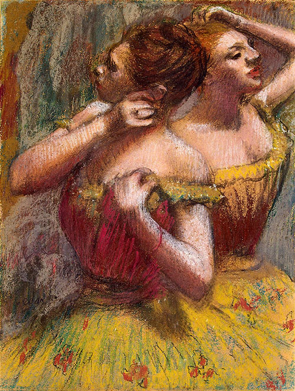
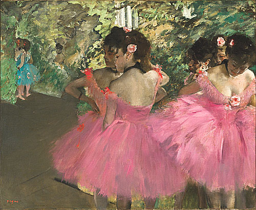
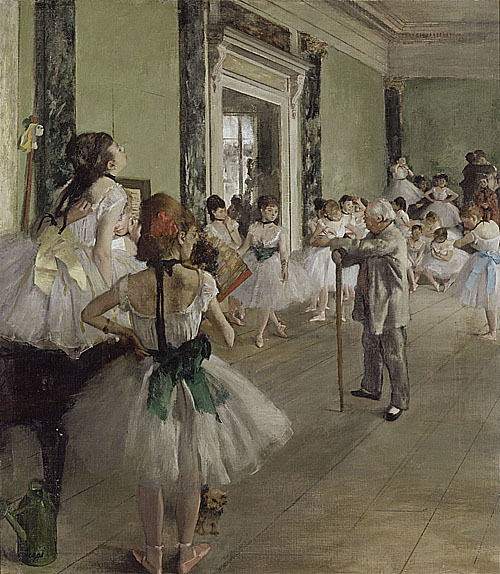

印象派藝術家介紹

竇加（Edgar Degas，1834年-1917年）是法國印象派藝術家之一，以描繪舞蹈、馬術和女性日常生活為主題的作品而聞名。他被認為是印象派藝術中最具獨特風格的藝術家之一。 竇加的作品顯示出對人體動態和運動的特殊興趣。他經常觀察和描繪舞者和馬術運動員，捕捉他們瞬間的姿態和動作。他擅長使用多種媒材，包括石墨、粉彩、油畫和雕塑等，並將這些媒材結合在一起，創造出獨特的視覺效果。 竇加的作品風格獨特，他不像其他印象派藝術家那樣追求純粹的自然光線效果，而更注重形態和構圖的表現。他經常運用對比和斜切的視角，以及對空間的切割和折疊，創造出富有動態感和戲劇性的場景。 他的作品展示了現代都市生活中的女性形象和社交場景，並揭示了當時社會的階級和性別關係。 竇加的作品在他的生命中並不廣為人知，直到晚年時期才獲得了廣泛的認可。他的作品現存於世界各地的博物館和私人收藏中，被視為印象派藝術的經典之一，對後世的藝術家和觀眾產生了深遠的影響。
-

《兩位舞者》 《粉紅舞者》 《舞蹈課》